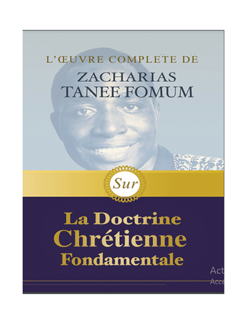
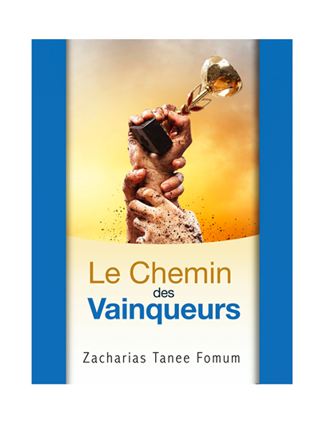
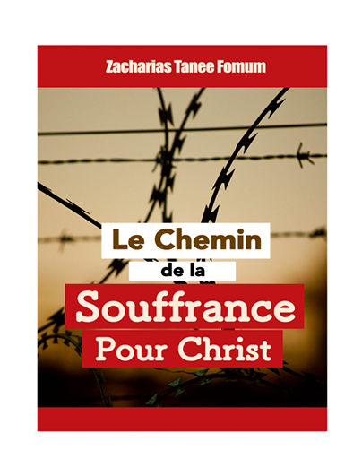
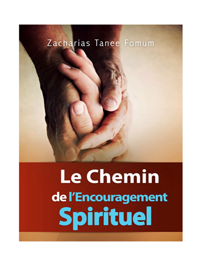

Catalogue
Discover what's new
ZTF - 1000FCFA
l'utilisation du temps
 Ce livre : L’UTILISATION DU TEMPS est le premier dans la série des
livres intitulés: “Aides Pratiques pour les Vainqueurs”.
Le temps est l’un des plus précieux dons que Dieu ait faits à l’homme. En
faisant aux gens le don du temps, le Seigneur S’est rassuré que nul ne puisse
se considérer comme spécialement favorisé ou spécialement défavorisé.
Ce livre : L’UTILISATION DU TEMPS est le premier dans la série des
livres intitulés: “Aides Pratiques pour les Vainqueurs”.
Le temps est l’un des plus précieux dons que Dieu ait faits à l’homme. En
faisant aux gens le don du temps, le Seigneur S’est rassuré que nul ne puisse
se considérer comme spécialement favorisé ou spécialement défavorisé.Avez-vous des problèmes de gestion de votre temps ? Planification ou tout simplement organisation ?? Si oui, ce livre est fait pour vous. Voir plus
ZTF - 20000FCFA
L'oeuvre Complète sur la doctrine
 L’Œuvre complète de Zacharias Tanee Fomum sur la Doctrine chrétienne fondamentale est une anthologie de 13 livres clés sur les doctrines fondamentales de la vie chrétienne par le Professeur Zacharias Tanee Fomum. Toute personne qui commence sa marche chrétienne sans ces fondamentaux pourrait trainer les pas sur le chemin étroit, au lieu de courir ou d’être en croisière.Le Chemin de la vie ouvre les rideaux sur les merveilles de la vie en abondance en Christ. Il te montre comment reconnaître et extirper la vieille nature pécheresse et en faire une vie abondante en Christ Jésus. Voir plus
ZTF - 1500FCFA
Le Chemin des Vainqueurs
 Ce livre : Le Chemin Des Vainqueurs, est le onzième dans la série du “Chemin chrétien”. Les vainqueurs sont des gens qui, lorsqu’ils sont devant le choix constant entre satisfaire Dieu et satisfaire le moi, choisissent constamment de satisfaire Dieu (ce qui signifie aussi qu’ils rejettent avec consistance le malin) ils satisfont le coeur de Dieu et font d’eux-mêmes l’objet de la plus grande furie de l’enfer et de la plus grande joie du ciel.Veux-tu marcher toujours Vainqueur, triomphant ? Le chemin t'y es ouvert à travers ce livre. Voir plus
ZTF - 1500FCFA
Le Chemin de la Souffrance pour Christ
 Ce livre : Le Chemin de la Souffrance pour Christ , est le neuvième de la série du Chemin Chrétien. Tous ceux qui planifient de suivre le Seigneur jusqu’à la fin doivent lire ce livre, et mettre son message en pratique. Le pays où ils se trouvent et toute liberté apparente ne devraient pas tromper les vrais croyants. La persécution surviendra sur tous les vrais croyants partout dans le monde. Ton tour arrive et il pourrait arriver plus tôt que tu ne l’imagines.Voir plus
ZTF - 1500FCFA
Le Chemin de l'Encouragement Spirituel
 Si tu les abordes comme étant un partage de quelque chose venant de mon coeur vers le tien, tu seras, par la grâce de Dieu, béni. Si tu les abordes comme étant des messages doctrinaux, tu pourrais avoir des problèmes. Je suggère que tu ouvres juste ton coeur à Dieu et que tu reçoives ce qu’Il a pour toi.J’ai juste laissé couler ce que Dieu a mis dans mon coeur et quelquefois, Il a é té plein de grâce en permettant aux choses que je n’avais jamais vues de couler. Si tu les abordes comme étant un partage de quelque chose venant de mon coeur vers le tien, tu seras, par la grâce de Dieu, béni. Voir plus